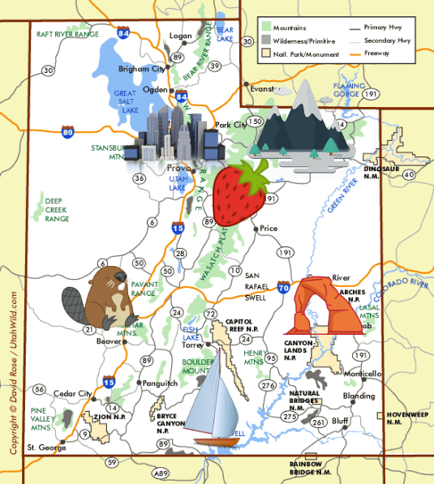

|

|
Welcome to my interactive map!
Click on each icon to learn more about:
- Salt Lake City (where I live)
- The Uinta Mountains (my favorite scenery)
- Strawberry Reservoir (my favorite fishing spot)
- Beaver, Utah (my favorite camping spot)
- Arches National Park (my favorite place to hike)
- Lake Powell (my favorite place to boat)
|